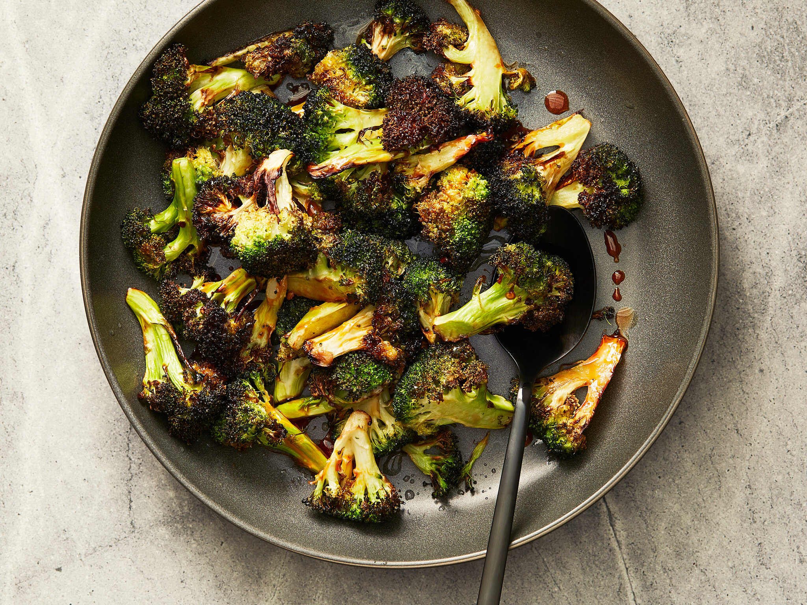

Air-Fried Broccoli

Delicious broccoli that tastes like loklok broccoli (if you haven't tried loklok broccoli, please go try them now. Please.)
Ingredients
- Broccoli
- Salt
- Pepper
- Herbs and Spices
- Olive Oil
Steps
- Cut the broccoli into smaller pieces and remove the stems
- Wash the broccoli
- Add salt, pepper, herbs and spices and drizzle with olive oil (make sure each broccoli is coated)
- Put the broccoli into oven for 10 min on high heat
- The broccoli will now be crispy and flavorful
- Plate and serve! Enjoy it as a quick snack or make a big batch and store for future consumption (meal prep)
Back to home
Return to top